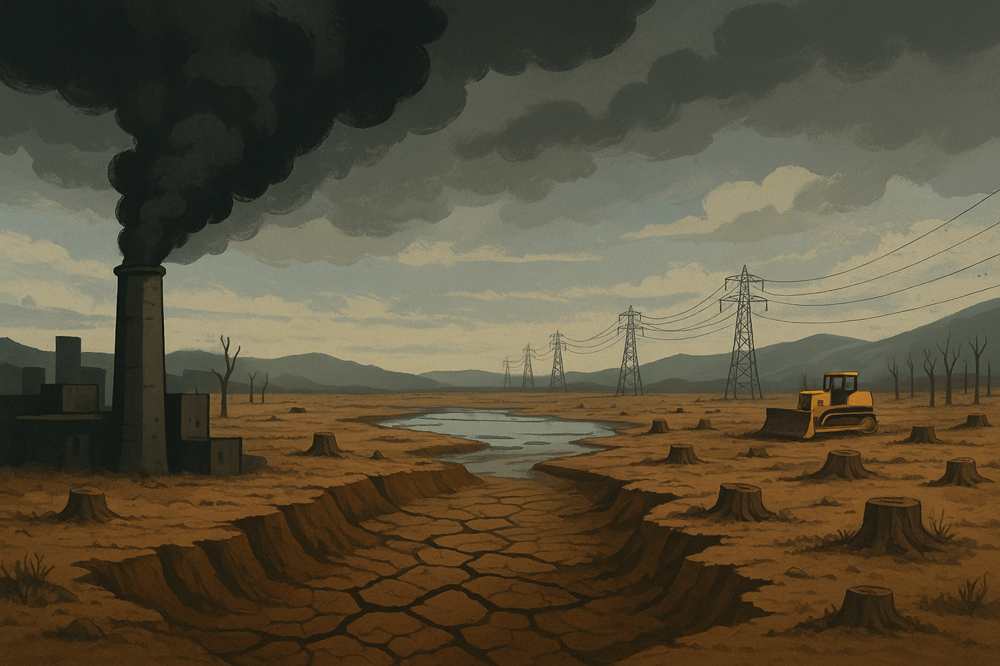

Antropotsen Davrida Ekologik Muammolar

Antropotsen Davri va Ekologik Muammolar
Biz insoniyat faoliyati sayyoramizning geologik, ekologik va iqlimiy tizimlariga hal qiluvchi ta'sir ko'rsatayotgan yangi geologik davr – Antropotsenda yashamoqdamiz. Ushbu davrda antropogen ta'sirni o'rganish endilikda tor doiradagi mutaxassislik emas, balki mas'uliyatli global fuqarolik uchun asosiy kompetensiyaga aylandi. Insoniyatning tabiat bilan o'zaro munosabatlari murakkablashib, uning oqibatlari misli ko'rilmagan miqyosga yetgan bir paytda, ekologik inqirozlarning mohiyatini, sabab-oqibat bog'liqligini va yechim yo'llarini chuqur anglash oliy ta'limning fundamental vazifasidir.
Ushbu amaliy mashg'ulot bakalavriat talabalariga antropogen ta'sirning nazariy asoslaridan tortib, uning amaliy oqibatlarini tahlil qilishgacha bo'lgan keng qamrovli bilim va ko'nikmalarni berishga mo'ljallangan. Mashg'ulotning markaziy o'qi sifatida XX asrning eng yirik ekologik fojealaridan biri – Orol dengizining qurishi tanlangan.
Maqsadi va Tuzilishi
Ushbu amaliy mashg'ulotning asosiy maqsadi – talabalarda insoniyatning atrof-muhitga ta'siri, ekologik inqirozlarning kelib chiqish mexanizmlari va ularni bartaraf etish yo'llari haqida tizimli, ilmiy asoslangan va tanqidiy dunyoqarashni shakllantirishdir. Mashg'ulot talabalarga nafaqat muammolarni aniqlash, balki ularning yechimiga qaratilgan kompleks strategiyalarni ishlab chiqish ko'nikmalarini singdirishga qaratilgan.
- I Qism: Nazariy Asoslar. Antropogen ta'sir tushunchasi, uning turlari va tasnifi, shuningdek, ekologik inqiroz konsepsiyasi global tarixiy va zamonaviy misollar orqali yoritiladi.
- II Qism: Keys-stadi – Orol Dengizi. Orol dengizi fojiasining sabablari, ekologik va gumanitar oqibatlari chuqur, ma'lumotlarga asoslangan holda tahlil qilinadi.
- III Qism: Yechimlar va Kelajak. Barqaror rivojlanish paradigmasi, "ekologik inqilob" g'oyalari hamda Orolbo'yini tiklash bo'yicha amalga oshirilayotgan milliy va xalqaro sa'y-harakatlar tanqidiy baholanadi.
Talabalar uchun O'quv Natijalari
- Antropogen ta'sirning turli shakllarini aniqlay oladi va tasniflay oladi.
- Murakkab ekologik inqirozlarga olib keluvchi sabab-oqibat zanjirlarini tahlil qila oladi.
- Orol dengizi fojiasining ekologik, ijtimoiy va iqtisodiy oqibatlarini miqdoriy va sifat ma'lumotlaridan foydalangan holda tanqidiy baholay oladi.
- Atrof-muhitni tiklash va barqaror rivojlanish bo'yicha turli milliy strategiyalarni qiyosiy tahlil qila oladi.
- Mintaqaviy ekologik muammolar uchun integratsiyalashgan, ko'p tarmoqli yechimlarni ishlab chiqadi va taklif qila oladi.
Antropogen Omillar va Tasnifi
Antropogen omillar (yunoncha anthropos – inson, genos – kelib chiqish) – bu inson va uning xo'jalik faoliyatining o'simlik, hayvonot dunyosi, tuproq, suv, atmosfera va boshqa tabiat komponentlariga ko'rsatadigan ta'siri bilan bog'liq bo'lgan omillar majmuidir. Hozirgi kunda Yer yuzida insonning bevosita yoki bilvosita ta'siri yetib bormagan landshaft deyarli qolmagan. Shu sababli, ilmiy tahlilning asosiy maqsadi inson ta'sirining mavjudligini aniqlash emas, balki uning darajasini, xarakterini (barqaror yoki degradatsiyaga olib keluvchi) va oqibatlarini baholashga qaratilgan.
Bevosita va Bilvosita Ta'sir
- Bevosita ta'sir ekotizimlarni to'g'ridan-to'g'ri jismoniy o'zgartirish yoki yo'q qilishni o'z ichiga oladi. Masalan: o'rmonlarni kesish, foydali qazilmalarni qazib olish, yerlarni o'zlashtirish va shahar qurilishi.
- Bilvosita ta'sir dastlabki harakat natijasida tizimlar bo'ylab tarqaladigan ikkilamchi oqibatlardir. Masalan: sanoat chiqindilari natijasida mintaqaviy iqlimning o'zgarishi, suv havzalarining kimyoviy tarkibining buzilishi, tuproq strukturasining o'zgarishi.
Sektorlar bo'yicha Tasnif
- Qishloq xo'jalik landshaftlari: ekin maydonlari, bog'dorchilik, o'tloq-yaylovlar. Monokulturali agrosenozlar, sug'orish va o'g'itlar tabiiy biotsenozlarni o'zgartiradi.
- Sanoat landshaftlari: karyerlar, chiqindi uyumlari, terrikonlar va sanoat hududlari.
- Chiziqli-yo'l landshaftlari: avtomobil yo'llari, temir yo'llar, neft va gaz quvurlari hayvon migratsiyasini to'sib qo'yadi va gidrologik rejimni o'zgartiradi.
Konstruktiv va Destruktiv Oqibatlar
- Konstruktiv (Yaratuvchi) ta'sir: inson madaniy o'simliklar va uy hayvonlari uchun yangi sharoitlar yaratadi, mahsuldorlikni oshiradi.
- Destruktiv (Buzg'unchi) ta'sir: noto'g'ri sug'orish, sanoat chiqindilari, pestitsidlar va boshqa faoliyatlar yer, suv va havo ifloslanishiga olib keladi. Orol dengizi fojiasi misol bo'lib xizmat qiladi.
Muammoga Yechimlar
Antropotsen davridagi ekologik muammolarni kamaytirish va oldini olish uchun global, mintaqaviy va mahalliy darajada kompleks choralar zarur. Quyidagi yechimlar eng samarali strategiyalar qatoriga kiradi:
- Barqaror resurs boshqaruvi: suv, yer va o'rmon resurslaridan oqilona foydalanish.
- Yashil texnologiyalar: qayta tiklanadigan energiya va chiqindisiz ishlab chiqarish.
- Suv resurslarini muhofaza qilish: suvni tejash texnologiyalari va Orolbo‘yi ekologik tiklash loyihalarini kengaytirish.
- Atmosfera ifloslanishini kamaytirish: ekologik transport, energiya samarador texnikalar.
- Biologik xilma-xillikni tiklash: qo'riqxonalar tashkil etish, degradatsiyalangan hududlarni tiklash.
- Ekologik ta'lim: aholining ekologik ongini oshirish va barqaror turmush tarzini targ‘ib qilish.
- Ekologik siyosat: qat'iy ekologik me'yorlar va nazorat tizimlarini kuchaytirish.